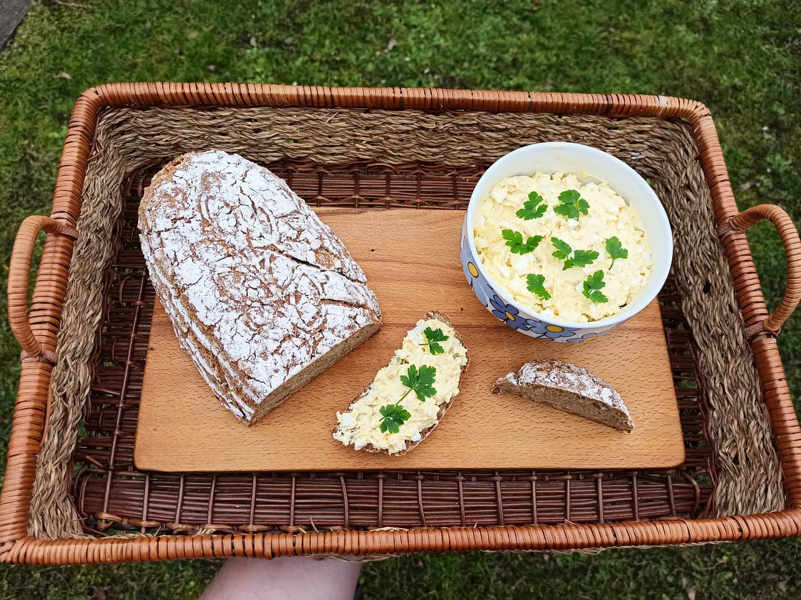

Vajíčková nátierka podľa @_marky_ditko_ — Normy Jedál
Lowcarb chlebik s vajickovou pomazankou. #vajíčkovápomazánka #vajíčkovápomazánkatroškujinak #vajickova #vajickovanatierka #lowcarbzivotnystyl #lowcarb #lowcarbchleba #lowcarbchleb #lowcarbchlebik #lowcarbrecipes #lowcarbfood #yummymummy #yummy😋😋 #smarkitkouvkuchyni #domácíchléb #domácíchleba #pečempecen #pečeníjeradost #pečemechleba #pecemechlebadoma #homemadebread🍞🥖 #homemade #slunečnicovásemínka #dýňovásemínka #lněnámouka